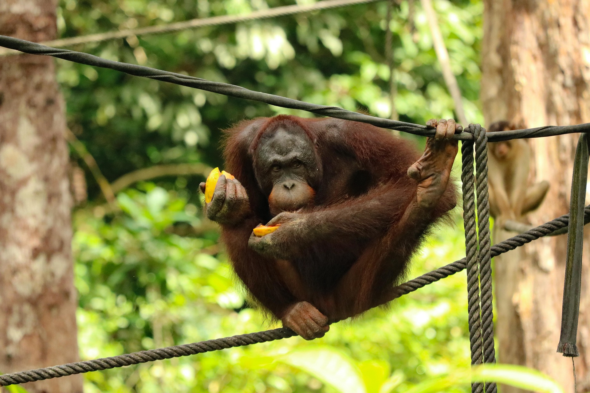

Orangután (Pongo)

Hábitat y estilo de vida
Son grandes simios nativos de las selvas tropicales de Indonesia y Malasia.
Actualmente se encuentran en Borneo y Sumatra. Pasan la mayor parte del tiempo en los árboles
y son de los grandes simios más solitarios. Se alimentan de vegetación, corteza, miel, insectos y huevos de aves.
Características
- Tienen brazos largos y piernas cortas.
- Su cuerpo está cubierto de pelo marrón rojizo.
- Los machos pesan alrededor de 75 kg y las hembras unos 37 kg.
- Pueden vivir más de 30 años.
- Son muy inteligentes y pueden usar herramientas.